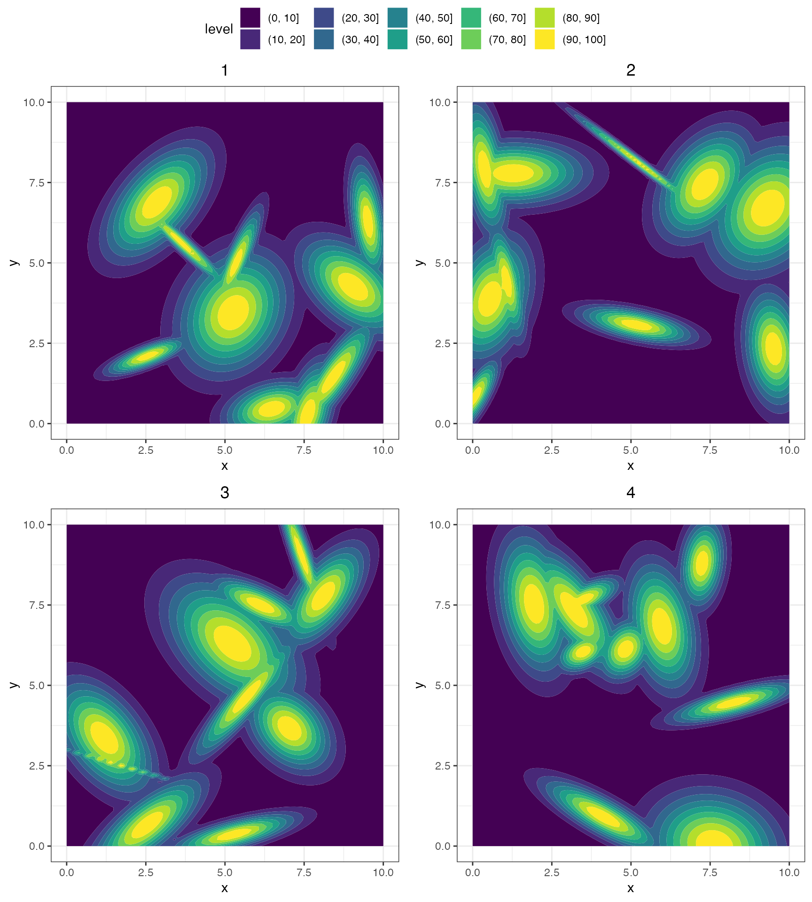
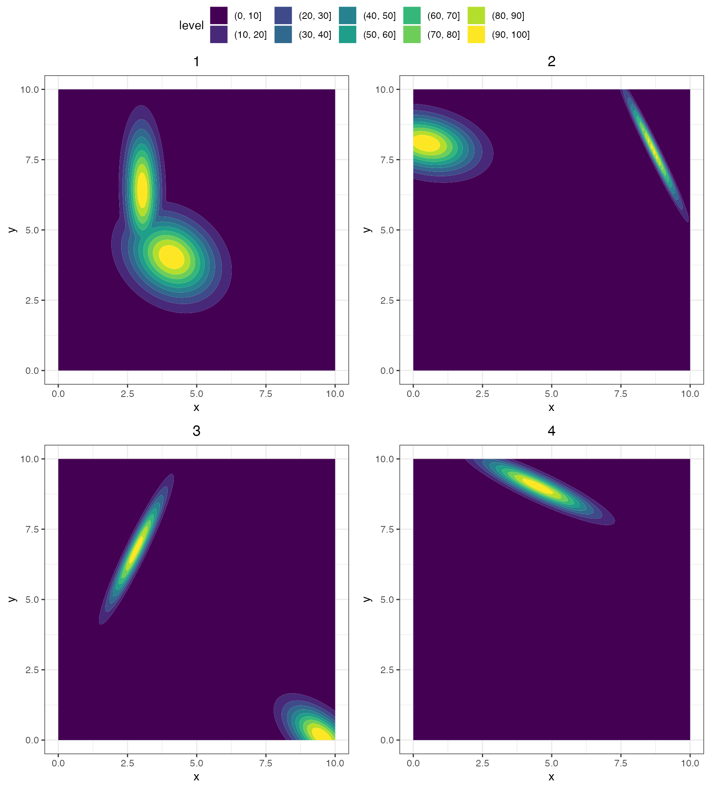
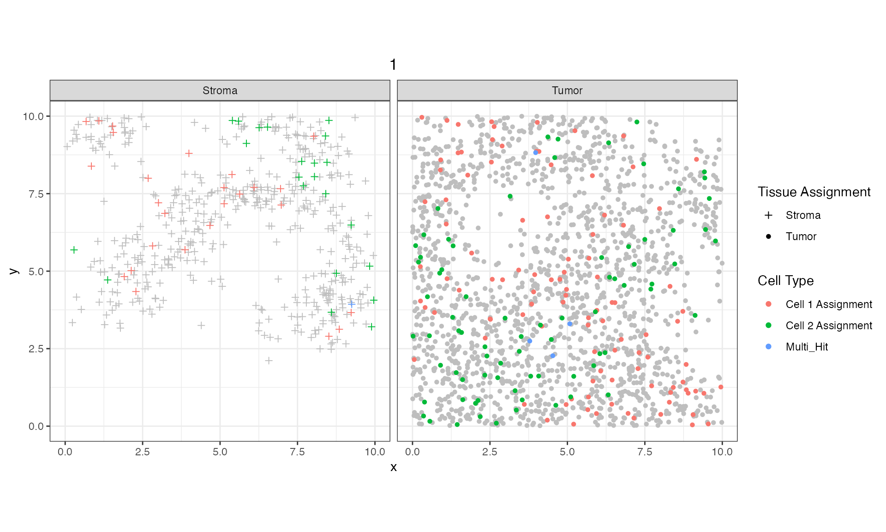

Simulating Bivariate Cells
Bivariate_Simulation.RmdBackground
In some cases, 2 or more cell types are wanted to assess how well
different methods are able to pick up colocalization or segregation.
With mIFsim, we have implemented a way to perform such
simulated cell arrangements.
Libraries
In order to get started simulating bivariate multiple immunofluorescence (mIF) samples, we need to import the package.
library(mIFsim)
#> mIFsim Version:
#> 0.0.0.9000
#> _____ ______ _
#> |_ _| ____| (_)
#> _ __ ___ | | | |__ ___ _ _ __ ___
#> | '_ ` _ \ | | | __/ __| | '_ ` _ \
#> | | | | | |_| |_| | \__ \ | | | | | |
#> |_| |_| |_|_____|_| |___/_|_| |_| |_|
#> Fridley Lab EnjoyRunning mIFsim
To create a simulation object, we can call
create_simObject, which takes in 3 arguments that will
initialize the object for all downstream functions:
-
window- aspatstatwindow object which is the boundary for which to simulate our points -
sims- an integer value that is the number of samples that is wanting to be simulated -
cell_types- this is the number of different phenotypes to simulate, here we will do 2 for CD3+ and CD19+
If a window isn’t specified a built in 10x10 will be used. Let’s create our simulation object. The number of simulations is also defaulted to 3 but for assessing these colocalization methods, probably want to use a lot to get confidence but here we will use 9.
sim_object = create_simObject(sims = 9, cell_types = 2)
#> Loading required package: spatstat
#> Loading required package: spatstat.data
#> Loading required package: spatstat.geom
#> spatstat.geom 3.2-1
#> Loading required package: spatstat.random
#> spatstat.random 3.1-5
#> Loading required package: spatstat.explore
#> Loading required package: nlme
#> spatstat.explore 3.2-1
#> Loading required package: spatstat.model
#> Loading required package: rpart
#> spatstat.model 3.2-4
#> Loading required package: spatstat.linnet
#> spatstat.linnet 3.1-1
#>
#> spatstat 3.0-6
#> For an introduction to spatstat, type 'beginner'
#> No `window` specified - defaulting to x (0, 10); y (0, 10)Using the summary method, we can see what our simulation
object has inside and what we need to do next. Here, we have 9
simulations with the default window and are wanting to perform this for
2 cell types. This method is really useful for when fine tuning
parameters to get the desired output because it shows you exactly what
has already been done when loading in the base object from an RDS
file.
summary(sim_object)
#> Spatial Simulation object for 9 simulations. Currently, there are:
#> Window: x (0,10); y (0,10)
#> 0 spatial processes
#> 0 tissue kernels
#> 0 hole kernels
#> 0 cell kernels for 2 cell typesNow that we have our simulation object and parameters set within, we
need to create the point pattern process. The
GenerateSpatialProcess function takes in the spatial
simulation object and a lambda, or intensity of the point
process. NOTE: with large windows and large lambdas, the size of
the spatial simulation object can grow fast so be mindful. Any
other parameters that could be passed to
spatstat.random::rpoispp can then be passed to
GenerateSpatialProcess at the end. Again, we can check how
we are filling in our slots with summary and even see how
our new process looks like with plot.
sim_object = GenerateSpatialProcess(sim_object)
summary(sim_object)
#> Spatial Simulation object for 9 simulations. Currently, there are:
#> Window: x (0,10); y (0,10)
#> 9 spatial processes
#> 0 tissue kernels
#> 0 hole kernels
#> 0 cell kernels for 2 cell types
plot(sim_object)Next we will generate some regions of the tumor an stroma. There are
some parameters that are initialized when building the spatial
simulation that tells downstream functions how to simulate things on a
Gaussian kernel - GenerateTissue is one of those. If there
is nothing supplied to the function when calling, it will default to
these values. Alternatively, can specify them in the function call.
These include regions within your window that you would like tissue
regions to be simulated, the number of regions, the standard deviation
range for how the probability falls off around the region centers, etc.
Something here is whether the ending kernel should be converted to a
heatmap and at what resolution. NOTE: the smaller the
step_size used for the heatmap the longer it takes to run
so be mindful. If metrics are changed, then they can be
recalled later to know exactly what was used to generate the data.
After simulating the tissues we can look at the summary of the spatial simulation object to see the newly filled slot.
sim_object = GenerateTissue(sim_object, density_heatmap = T, step_size = 0.1, cores = 1)
#> Computing density heatmap
#> Computing tissue probability
summary(sim_object)
#> Spatial Simulation object for 9 simulations. Currently, there are:
#> Window: x (0,10); y (0,10)
#> 9 spatial processes
#> 9 tissue kernels
#> 0 hole kernels
#> 0 cell kernels for 2 cell typesThe tissue kernel slot is now filled the number of kernels matching
number of spatial processes we have. Let’s take a look at the simulated
tissue kernels with PlotSimulation and what as
the tissue heatmap.
PlotSimulation(sim_object, which = 1:4, ncol = 2, nrow = 2, what = "tissue heatmap")
#> Loading required package: ggplot2
The kernels are randomly laid about the simulation region and random
sizes within the constraints of the parameters used. The number of
tissue regions simulated are fixed by the input k value,
and not sampled from a distribution centered at k. A larger
sdmin and sdmax would increase the sizes of
the tissue regions.
Generating holes can help assess the need for correcting spatial statistic metrics derived. For example, if there is a pond in the center of a field (a hole), crops are not able to be planted there yet measuring the amount of field there is just by the outside border (window) will say that lots of crops should be able to fit. Sometimes, these things need to be adjusted for. Even if not using holes for assessing metrics, performing them will just create a new column in the spatial files that can be later ignored.
The parameters that go into GenerateHoles is similar to
that of GenerateTissue with one addition:
hole_prob or the proportion range of the point processes
that could become holes. All of these parameters had defaults set when
the spatial simulation object was created, but can be overridden here if
a particular area of the process is wanted to have the holes and not the
rest (x and y min and max ranges). The number of holes is random as long
as the sum of the area is within the proportions above.
sim_object = GenerateHoles(sim_object, density_heatmap = T, step_size = 0.1, cores = 1)
#> Computing density heatmap
#> Computing hole probability
summary(sim_object)
#> Spatial Simulation object for 9 simulations. Currently, there are:
#> Window: x (0,10); y (0,10)
#> 9 spatial processes
#> 9 tissue kernels
#> 9 hole kernels
#> 0 cell kernels for 2 cell typesLet’s see how the kernels for holes look. The center of the holes
have the highest probability of being removed with a Bernoulli
distribution of ‘hole’ or ‘not a hole’. The what parameter
is now “hole heatmap”.
PlotSimulation(sim_object, which = 1:4, ncol = 2, nrow = 2, what = "hole heatmap")
Next thing for us to do is to simulate the positivity of cells for a
phenotype. Just like holes and the tissue, there are boundaries which
the simulated positive cells will fall in which are stored in the
parameters. This is helpful for going back and seeing what was done.
However here, there are 2 different parameters that help set the
abundance (probs) and, in the case of multiple cell types,
how related those cell types are (correlation).
The probs parameter is used to scale the probabilities
for the cell type where the first number is away from kernel peaks and
the second is the maximum probability for a cell. For higher abundance,
the maximum probability can be set higher and even increase the minimum
probability. An issue with doing this on point processes that have
multiple cell types is that they are not entirely informed of one
another when assigning cell types. B cells and T cells are distinct
phenotypes and therefore one cell shouldn’t be positive for
both. What we do, is use the probability with the Bernoulli distribution
so there’s a chance a single cell will be positive for 2 cell types,
even if the max probability is 0.1.
Sometimes we want to study the clustering or dispersion of different
cell types. In this case, we want to make them either very alike
(positive correlation) or very different (negative correlation). What we
do in the background is take same probability as the first cell
simulated and adjust it according to the correlation
parameter. The kernels in the spatial simulation object will be the same
for all cell types, but at the time of creating the density heatmap or
assigning a cell positive/negative, the probabilities are adjusted.
Play around with positive or negative correlations and see what happens.
sim_object = GenerateCellPositivity(sim_object, k = 4,
sdmin = 3, sdmax = 5,
density_heatmap = T, step_size = 0.1, cores = 1, probs = c(0.0, 0.1),
correlation = -1)
#> Computing density heatmap for Cell 1
#> Computing probability for Cell 1
#> Adjusting density heatmap for Cell 2
#> Computing probability for Cell 2
summary(sim_object)
#> Spatial Simulation object for 9 simulations. Currently, there are:
#> Window: x (0,10); y (0,10)
#> 9 spatial processes
#> 9 tissue kernels
#> 9 hole kernels
#> 9 cell kernels for 2 cell typesWhen there are multiple cells to be simulated, we can see the heatmap for cell type 2 be copied and adjusted by the correltation which is much faster than calculating the density heatmap from the kernel. Lets look at how the new cells are distributed in the mIF with a correlation of -1. This means that the cell types are segregated so Cell 1 is closer to Cell 1 and Cell 2 is closer to Cell 2. Again, because each cell has a probability of being positive there will always be some ‘noise’ but the trend is there.
PlotSimulation(sim_object, which = 1, what = "whole core")
Lastly, the data is likely wanted in tabular format. Since there are
multiple simulated point processes, the function
CreateSpatialList returns a list of data frames containing
cell x and y locations, the tissue that the cell belongs to, whether the
cell falls in a hole, and the positivity of the different cell
types.
spatial_list = CreateSpatialList(sim_object = sim_object)
#> Loading required package: dplyr
#>
#> Attaching package: 'dplyr'
#> The following object is masked from 'package:nlme':
#>
#> collapse
#> The following objects are masked from 'package:stats':
#>
#> filter, lag
#> The following objects are masked from 'package:base':
#>
#> intersect, setdiff, setequal, unionThe spatial list can now be used with packages like
spatialTIME to compute spatial statistics on all of the
simulated data frames.